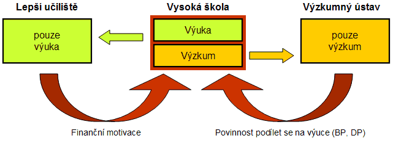

Obsah:
|
V této èásti se zamìøím na negativa, která vnímám na FEL a která chci odstranit èi alespoò zmìnit. Zámìrnì tedy nebudu chválit pozitiva, mezi která øadím orientaci na kvalitní výzkum na svìtové úrovni èi postupnou modernizaci poslucháren a dalších prostor.
Fakulta elektrotechnická, stejnì jako celé ÈVUT, nereaguje dostateènì rychle na dynamický vývoj nových technologií a mìnící se zájem o odborný profil absolventù. Nedaøí se jí pru¾nì reagovat na zmìny spoleèenské poptávky, neumí se vypoøádat s poklesem zájmu o nìkteré obory. Fakulta pùsobí konzervativním dojmem, co¾ lze na jednu stranu vnímat jako pozitivní, stabilizující faktor, na druhé stranì to pøináší zásadní komplikace tìm, kteøí na mìnící se okolní prostøedí chtìjí být a jsou pøipraveni. Konzervativní prostøedí fakulty brzdí její rozvoj. Schopným lidem se nedostává prostøedkù (zejména prostorových, ale mnohdy i mzdových), proto¾e tyto prostøedky ji¾ byly v minulosti alokovány a zakonzervovány a nyní je obtí¾né tento stav zmìnit.
Výmluvným pøíkladem je dlouhodobá neschopnost fakulty zaujmout jasné stanovisko k výuce v oblasti informatiky. Pøesto¾e všichni souhlasí s tím, ¾e souèasný svìt mìní svùj charakter do podoby informatické spoleènosti, v ní¾ dostupnost, efektivní zpracování a následné vyu¾ívání informací (tj. vìtšinou digitálních dat) sehrávají klíèovou úlohu, v rámci fakulty není zøejmé, jak a zda tento trend vyu¾ít na pùdì FEL. Hlavní otázkou je, zda informatiku pojmout jako silnou oblast stojící na stejné úrovni jako elektrotechnika èi zda ji chápat jako pøílepek/doplnìk k tomu hlavnímu, co si nese FEL ve svém názvu. První pøístup znamená perspektivu pro rozvoj FEL ve smyslu zájmu studentù, presti¾e a výzkumu, druhý pøístup charakterizuje dosavadní pøevládající strategii souèasné fakulty.
Obtí¾nost a souèasnì naléhavost situace dokreslují následující èísla. V pøedchozích letech vzdìlávala katedra poèítaèù (jako jedna z kateder vìnujících se informatice) pøibli¾nì 20% studentù na FEL (ve smyslu studentù oboru). Tento pomìr odpovídal pojetí informatiky jako doplòku k elektrotechnice. Ve školním roce 2006/2007 však projevilo zájem o obory zajiš»ované touto katedrou ji¾ více ne¾ 50% (!) studentù v 1. roèníku bakaláøského studia (viz web FEL - www.fel.cvut.cz/aktuality/rozdeleni.html). Pøipoèteme-li ještì studenty oborù zajiš»ovaných dalšími katedrami z oblasti informatiky (kybernetika, øídicí technika), je zøejmé, ¾e zájem studentù, firem a dalších subjektù se pøesouvá smìrem k informatice. To zásadnì ovlivní fakultu jako celek. Pokud fakulta "otevøe náruè" informatice, bude z toho mít prospìch. V opaèném pøípadì èeká fakultu útlum zájmu studentù.
Zatím se zdá, ¾e odpovìï na tyto otázky zní: NE.
V rámci své kandidatury chci ukázat, ¾e správná cesta pro FEL je zalo¾ena na maximálním vyu¾ití informatiky a ¾e tento krok vy¾aduje podstatné zmìny ve struktuøe fakulty. Jsem si vìdom, ¾e tyto zmìny mohou zpùsobit (doèasné) otøesy, ale pova¾uji je za nutné - pouhým záplatováním dìr nikdo nový kabát neušije.
V rámci FEL pova¾uji za nutné pøijmout a poté dodr¾ovat nìkolik základních pravidel:
|
Studijní programy by mìly být vizitkou fakulty. Jejich tvorba musí vycházet z potøeb budoucích zamìstnavatelù absolventù, nikoliv z potøeb uèitelù a kateder ve smyslu "ještì umím tohle a tohle, tak to vnutím do studijního plánu". Kvalita souèasných studijních programù je do znaèné míry obrazem neujasnìné koncepce smìøování FEL z minulých let. Studijní programy obsahují mnoho povinných a málo volitelných pøedmìtù, nejsou pøipraveny na individualitu nadaných studentù, neumo¾òují flexibilní sestavování skladby pøedmìtù podle potøeb konkrétních prùmyslových subjektù, apod.
Pro bakaláøské i magisterské studium navrhuji zavedení tøí programù s následujícím obsahem (konkrétní názvy a zkratky nyní nepova¾uji za dùle¾ité):
|
Toto èlenìní poskytne studentùm i pedagogùm lepší orientaci, ne¾ doposud diskutované, ale souèasnì i nejasné kombinace elektrotechniky a informatiky (E+i) a (I+e), kde velké, resp. malé písmeno znamená hlavní, resp. menší dùraz na danou oblast. Èitelnìjší èlenìní studijních programù mù¾e prospìt katedrám v jejich dalším profilování, rozdìlování èi naopak sluèování. Navrhované programy pova¾uji za ¾ivotaschopné a perspektivní (srovnej napø. s novým pojmenováním úspìšných fakult VUT v Brnì - Fakulta elektrotechniky a komunikaèních technologií, Fakulta informaèních technologií).
®e je jasné odlišení obsahu studijních programù realizovatelné a nevy¾aduje pøitom rozdìlení fakulty, dokládá situace na MFF UK, kde bez principiálních problémù koexistují tøi programy - matematika, fyzika, informatika. V rámci jediné fakulty tedy existují tøi, relativnì samostatné, jasnì profilované proudy. K takovému modelu chci smìøovat fakultu FEL. Jinak øeèeno - tématicky si vzít pøíklad z VUT, organizaènì z UK. Není potøeba hledat jinou, tøetí cestu...
Mezi další plánované zmìny/úpravy ve studiu patøí:
Otázku, zda se soustøedit pouze na nejlepší studenty èi zda vzdìlávat ka¾dého, kdo "zaklepe na dveøe školy", navrhuji øešit pøirozenou cestou s pomocí existujícího dìlení studia na bakaláøské, magisterské a doktorandské. Konkrétnì:
Za vhodný pova¾uji pomìr poètu studentù 30:15:2 (B:M:D), tedy pøibli¾nì dvojnásobek bakaláøù oproti magistrùm.
Fakulta se musí soustøedit na to, aby mìla výborné uèitele. Za optimálního vysokoškolského pedagoga je obecnì oznaèován ten, kdo jednu polovinu svého úsilí vìnuje výuce a druhou polovinu takové práci (obvykle vìdecké), jejími¾ výsledky posléze výuku obohacuje. Tomu odpovídá prostøední èást následujícího schématu na obrázku 1.

Obr. 1: Vztah mezi výukou a výzkumem na vysoké škole
Pøíliš
velký dùraz na jednu z obou stránek pedagogovy osobnosti
vede k odklonu od hlavního, a tedy ký¾eného
smìrování vysoké školy. To platí
pøedevším pro pedagogy zajiš»ující
výuku v profilových (oborových) pøedmìtech,
jejich¾ náplò je tøeba prùbì¾nì mìnit a vylepšovat. Pro
uèitele, kteøí zajiš»ují základní
pøedmìty (matematika, fyzika, jazyky, programování, aj.),
není apel na vìdeckou práci tak silný,
nicménì vìdecké výsledky jsou vítány
i zde.
Úkolem fakulty je vytváøet prostøedí podporující takové pedagogy, kteøí zkvalitòují obì základní stránky svých aktivit - výuku a výzkum. Fakulta proto musí mít citlivé, ale pøitom dostateènì silné mechanismy na regulaci odchylek v obou ne¾ádoucích smìrech, tedy jak ve smìru k výuce bez modernizace, tak k výzkumu èi jiným aktivitám bez vztahu k výuce. Tyto zpìtné vazby jsou na obr. 1 naznaèeny velkými zaoblenými šipkami.
Úèinným a ovìøeným nástrojem je finanèní motivace. Pokud nastupující asistent dostává pouze tabulkový plat 14 tis. Kè, tì¾ko po nìm lze ¾ádat nadšení pro nároènou vìdeckou práci poté, kdy oduèí pøedepsaný poèet cvièení. Pokud však bude zapojen do výzkumných èi prùmyslových projektù (zejména mezinárodních), jeho finanèní situace se zlepší a navíc dojde k ¾ádoucí rovnováze aktivit "výuka + výzkum".
Pøíklad:| Úvazek | Èinnost | Mzda |
| 50% | Výuka v plném rozsahu pøíslušném pro asistenta (napø. 6 cvièení týdnì) | 14 tis. Kè |
| 50% | Polovièní úvazek na projektu, jeho¾ výsledky obohacují výuku | 20 tis. Kè |
Tabulka 1: Zdroje financování asistenta realizujícího "výuku + výzkum"
Pozn.: V rámci ÈVUT lze snadno nastavit strukturu mzdy po formálním sní¾ení výukového úvazku na polovièní (tj. bude-li uva¾ovaný asistent i nadále zajiš»ovat plný rozsah své výuky). Tehdy bude jeho 50% výukový úvazek slo¾en z polovièního tabulkového platu (7 tis. Kè) a z osobního ohodnocení ve výši a¾ do 150% (zde konkrétnì jen 7 tis. Kè).
Aby
výše uvedený pøíklad nebyl výjimkou,
ale stal se bì¾ným nástrojem pro motivaci k
vìdecké a výzkumné práci, musí
fakulta jednoznaènì podporovat takové zamìstnance (obvykle své docenty a profesory),
kteøí získávají a
úspìšnì øeší velké prùmyslové
projekty a výzkumné granty, z nich¾ lze
financovat další odbornì pracující pedagogy fakulty.
Hodnocení pedagogické práce je na FEL realizováno zejména formou studentské ankety. Její vyu¾ívání jednoznaènì podporuji - zpìtná vazba od studentù je ostatnì zavedena na vìtšinì univerzit, které chtìjí pracovat na zkvalitnìní své výuky. Ménì obvyklé je pak promítání výsledkù ankety do financování kateder - zde si dovedu pøedstavit, ¾e postupnì dojdeme ke stavu, kdy samotné výsledky ankety ovlivní personální politiku vedoucích kateder i bez nutnosti finanèního tlaku.
Objektivní hodnocení výzkumné práce je komplexní problém, o kterém svìdèí prùbì¾né zmìny kritérií a koeficientù v komponentì VVVS stejnì jako ne v¾dy úspìšná snaha definovat pojem presti¾ní publikace (èi konference). Pøikláním se k názoru, ¾e vìdecká práce nemusí být ze strany FEL zhodnocována výraznì finanènì, tedy ¾e stávající podpora výzkumu je dostaèující. Výsledky vìdecké práce lze toti¾ chápat nikoliv jen jako cíl, ale i jako prostøedek - u doktoranda prostøedek k dosa¾ení titulu PhD, u pedagogù prostøedek k získání mezinárodní presti¾e, výzkumných projektù a obecnì odborného rùstu. Pedagogy není tøeba odmìòovat za vìdeckou práci, ale pøesvìdèit je o tom, ¾e je pro nì výhodná. Tedy nikoliv vést za ruku, ale ukázat cestu.
Poznámka:Schéma zobrazené na obr. 1 lze dále podpoøit zavedením mìøítka kombinace aktivit pedagoga. Vzorec
jednoduše vyjadøuje vyvá¾enost kombinace výuky a výzkumu v práci uèitele. (Pozn.: Percentil
udává, kolik procent hodnocených má
horší výsledky, ne¾ daná osoba.
Nejlepší výkon má percentil 100,
nejhorší 0. Více viz www.scio.cz/tvorba_testu/hodnoceni_kvality/percentily.asp)
Do této èásti spadají dvì základní otázky vztahu mezi fakultou a katedrami: pøidìlování penìz a prostor. Souèasný zpùsob je nevyhovující, nebo» má konzervativní charakter a nepodporuje zmìny.
K rozdìlování mzdových prostøedkù pro výuku a výzkum byla na FEL zavedena metodika nazvaná KOMETA. Tato metodika pomocí øady koeficientù a vzorcù pomìrnì výsti¾nì popisuje rùzné styly a nároènosti výuky. Jejím hlavním nedostatkem je však absence motivaèních prvkù pro zvyšování efektivity výuky a úsporu zdrojù.
Pøíklad 1:Metodiku pro rozdìlování financí je tøeba zmìnit tak, aby podporovala efektivní zpùsoby výuky. Pro katedry musí být ¾ádoucí uèit pøedmìty s více studijními skupinami, nikoliv malé pøedmìty pro 15 studentù. Je pøitom zøejmé, ¾e výuku nelze posuzovat paušálnì. Rozdíly mezi cvièením u tabule a v laboratoøi, stejnì jako rozdíly mezi pøednáškou pro 300 bakaláøù a specializovanou pøednáškou pro skupinu 20 magistrù je tøeba zohlednit. Doporuèuji však zavést výraznì jednodušší systém zalo¾ený zejména na poètu studentù daného pøedmìtu. Katedry se musejí "prát" (v dobrém slova smyslu) o studenty, aby výuka byla efektivní. Za standardní poèet studentù v pøedmìtu bakaláøského studia lze napø. stanovit 200 studentù, v magisterském programu pak 40 studentù. Katedry, které otevøou pøedmìty pro ménì studentù, budou ve ztrátì, kterou musejí korigovat výukou jiných pøedmìtù pro vyšší poèet studentù.
Vzhledem k velké rozmanitosti forem výuky (tabulová, laboratorní, poèítaèová, jazyky, apod.) bude v¾dy financování obsahovat prvek solidarity - velké bakaláøské pøedmìty pøinášejí finanèní prostøedky na výuku menších, magisterských pøedmìtù. Tato solidarita je nyní pøíliš široká - zahrnuje pøedmìty vyuèované všemi katedrami z celé fakulty. V rámci zprùhlednìní skuteèné efektivity výuky na FEL navrhuji jemnìjší èlenìní solidarity, konkrétnì uvnitø jednoho studijního programu (E, K, I). Peníze za studenty budou pøicházet pøímo do daného programu. Pro ka¾dý program plánuji vytvoøení Rady programu (namísto souèasné Pedagogické komise), s významnou pravomocí v oblasti mno¾ství otevíraných pøedmìtù, posuzování kvality výuky a její nároènosti. Rada programu tak bude moci mimo jiné ovlivòovat cenu výuky a tím i mzdové prostøedky kateder zajištujících výuku v daném programu. Tímto zpùsobem vznikne na pùdì fakulty (mírné a zdravé) konkurenèní prostøedí mezi programy.
Pokud má fakulta pru¾nì reagovat na zmìny ve struktuøe, zájmu a poètu studentù, musí dokázat dynamicky pøidìlovat prostor tìm, kteøí se na výuce podílejí. Pøirozeným regulátorem jsou zde (opìt) peníze. Jeden z návrhù Komise pro vývoj metodiky pro rozdìlování ploch FEL je zalo¾en na pøidìlování ploch za úhradu (https://www.feld.cvut.cz/glance/zapisy/plochy/Plochyzauhradu.pdf). Tento princip pova¾uji za pøímoèarý a vhodný, budu jej prosazovat.
Mezi plochy za úhradu je tøeba zahrnout vìtšinu prostor, vyu¾ívaných danou katedrou. Pokud se katedøe nedostává penìz, nespoléhá na pomoc ze strany fakulty, ale sama hledá øešení - rekvalifikací uèitelù (s cílem nabídnout nové, perspektivní pøedmìty) nebo spojením s jinou, úspìšnìjší katedrou (co¾ vede k úspoøe administrativních sil a tedy i kanceláøí, konzultaèních místností apod.). Mezi plochy za úhradu lze zaøadit i laboratoøe, nebo» jsou schopny si na sebe vydìlat - jejich existence je pøedpokladem pro získávání prùmyslových a výzkumných projektù, tedy dalších zdrojù financí. Pokud je laboratoø prokazatelnì a v dohodnutém rozsahu vyu¾ívána ve výuce, je zpoplatnìna výraznì ni¾ší sazbou ne¾ laboratoø slou¾ící práci, která je jen minimálnì èi dokonce nikterak svázána s výukou.
Pokud bych vykonával funkci dìkana, do vedení pozvu pøedchozího dìkana FEL, prof. Škvora. Jeho zkušenosti s vnitøním chodem fakulty pova¾uji za velmi cenné.
Pro ka¾dý z navr¾ených tøí studijních programù zøídím kromì Rady programu té¾ funkci studijního prodìkana. Za vhodné kandidáty pova¾uji prof. Škvora (program E), doc. Šimáka, prof. Klímu, prof. Šebka (program K), doc. Müllera, prof. Hlaváèe, doc. Kubátovou (program I). Souèasné dìlení prodìkanù zvláš» na bakaláøské a magisterské studium lze opustit - vazba na studijní program je vhodnìjší z hlediska kontinuity studia.
Mezi další aktivity, které chci uskuteènit, patøí zahájení jednání s rektorem ÈVUT na téma dlouhodobìjší koncepce zajištìní prostor pro fakulty.
Narodil jsem se 8. 6. 1958 v Praze. Jsem ¾enatý a mám tøi dìti (vìk 24, 20 a 11). Svùj profesionální ¾ivot jsem spojil s FEL ÈVUT, kde po absolvování v roce 1982 pracuji na Katedøe poèítaèù. Na FEL jsem postupnì získal všechny své tituly - CSc. (1986), docent (1997), profesor (2007). Vìnuji se výuce a výzkumu v oblasti poèítaèové grafiky a virtuální reality (výuka pøedmìtù ve všech formách studia, 3 knihy v ÈR, 50 zahranièních recenzovaných èlánkù, výuka v Nìmecku, Francii a Mexiku, výuka na MFF UK a FI MUNI, èlenství v programových komisích presti¾ních konferencí, spolupráce se Škoda-Auto a firmami z oblasti IT, aj.).
Na FEL nejsem ani nejlepším vìdcem (s prùmìrným poètem 139 vìdecko-výzkumných bodù jsem na 24. místì z 578 uèitelù a výzkumníkù) ani nejlepším pedagogem (s hodnocením 1.314 jsem na 149. místì ze 438 uèitelù se statisticky významným hodnocením ve studentské anketì za ZS 2006/2007). Sna¾ím se obì tyto slo¾ky aktivit vysokoškolského uèitele udr¾ovat ve vyrovnaném stavu, v souladu s pøedstavou dle obr. 1.
Mezi své dosavadní úspìchy v oblasti vedení a øízení øadím pøedevším: